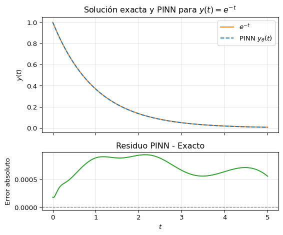

import torch
import torch.nn as nn
# Definir una red neuronal simple para y(t)
class RedEDO(nn.Module):
def __init__(self):
super(RedEDO, self).__init__()
self.red = nn.Sequential(
nn.Linear(1, 20), nn.Tanh(),
nn.Linear(20, 20), nn.Tanh(),
nn.Linear(20, 1)
)
def forward(self, t):
return self.red(t)
# Instanciar la red y el optimizador
modelo = RedEDO()
optimizador = torch.optim.Adam(modelo.parameters(), lr=1e-3)
T_max = 5.0
# Bucle de entrenamiento (entrenamiento informado por la física para EDO)
for epoca in range(10000):
# Muestrear puntos de colocación en el dominio [0, T]
t_coloc = torch.rand(32, 1) * T_max
t_coloc.requires_grad_(True) # habilitar gradiente respecto a t
# Calcular la salida de la red y su derivada temporal mediante autograd
y_pred = modelo(t_coloc) # y_θ(t)
dy_dt = torch.autograd.grad(y_pred, t_coloc,
grad_outputs=torch.ones_like(y_pred),
create_graph=True)[0] # y'_θ(t)
# Residuo físico para la EDO: f(t) = y'_θ + y_θ
f = dy_dt + y_pred
perdida_fisica = torch.mean(f**2) # residuo de la EDO
# Pérdida por condición inicial en t=0: (y_θ(0) - 1)^2
y0_pred = modelo(torch.zeros(1, 1)) # salida en t=0
perdida_ci = (y0_pred - 1.0) ** 2
# Pérdida total y paso de optimización
perdida = perdida_fisica + perdida_ci
optimizador.zero_grad()
perdida.backward()
optimizador.step()Redes Neuronales Informadas por la Física (PINNs)
Redes Neuronales Informadas por la Física para ecuaciones diferenciales ordinarias
Una red neuronal informada por la física (PINN, por sus siglas en inglés) es un aproximador de funciones basado en redes neuronales que se entrena no solo con datos, sino también para satisfacer las leyes físicas (normalmente expresadas como ecuaciones diferenciales) que gobiernan el sistema. En otras palabras, una PINN incorpora las ecuaciones gobernantes (por ejemplo, una ecuación diferencial ordinaria [EDO] o una ecuación diferencial parcial [EDP]) en su función de pérdida como restricción o regularizador. Este enfoque fue introducido por Raissi, Perdikaris y Karniadakis en 2017–2019 (Raissi et al. (2017), Raissi et al. (2019)). La idea es ayudarle a la red a generalizar usando la información de la ecuación diferencial.
Para una revisión reciente, véase Raissi et al. (2024). Este documento se basó en esa revisión, además de material de este libro.
Este es uno de los métodos más conocidos del llamado “aprendizaje automático científico” (Scientific Machine Learning, SML). Ha recibido críticas recientemente por la fragilidad del método. Es decir, cuando se aplica a ecuaciones diferenciales nuevas, puede que el método no funcione bien. También se ha notado que si se usa para resolver ecuaciones diferenciales numéricamente puede ser más lento que los métodos tradicionales en muchos casos.
Idea básica (para una EDO)
Considere una ecuación diferencial ordinaria simple, por ejemplo:
\[ y'(t) + y(t) = 0, \qquad y(0) = 1, \]
cuya solución analítica es \(y(t)=e^{-t}\). Para resolver esto usando una PINN, aproximamos la solución \(y(t)\) con una red neuronal \(y_\theta(t)\) (con parámetros \(\theta\)). La red se entrena para satisfacer tanto la EDO como cualquier dato o condición inicial/de contorno dada. Logramos esto definiendo una función de pérdida que incluye la EDO, llamada una “función de pérdida informada por la física”. Para la EDO anterior, definimos el residuo \[ r(t) = y_\theta'(t) + y_\theta(t), \]
que debería ser cero para todo \(t\) si \(y_\theta(t)\) satisface exactamente la EDO. La pérdida de la PINN puede entonces construirse para penalizar el residuo y cualquier desviación de las condiciones iniciales:
\[ \mathcal{J}(\theta) \;=\; \underbrace{\frac{1}{N_f}\sum_{i=1} ^{N_f} |r(t_i)|^2}_{\text{pérdida del residuo de la EDO}} \;+\; \underbrace{|\,y_\theta(0) - 1\,|^2}_{\text{pérdida de la condición inicial}}, \]
donde \({t_i}\) son un conjunto de puntos donde se evalúa la EDO, llamados puntos de colocación, en el dominio de interés (p. ej. \(t\in[0,T]\)). El término \(y_\theta'(t)\) se obtiene mediante diferenciación automática de la red neuronal con respecto a su entrada \(t\). Durante el entrenamiento, el optimizador ajusta \(\theta\) para minimizar \(\mathcal{J}(\theta)\), empujando así a \(y_\theta(t)\) a satisfacer tanto la EDO (haciendo \(r(t)\approx 0\)) como la condición inicial. En efecto, la ley física actúa como un regularizador que guía la red hacia soluciones físicamente consistentes.
Procedimiento de entrenamiento
Resolver una EDO con una PINN típicamente implica los siguientes pasos:
Definir la Red Neuronal: Elegir una arquitectura de red neuronal para \(y_\theta(t)\). Esta red tomará \(t\) como entrada y producirá una aproximación para \(y(t)\).
Configurar la Función de Pérdida: Formular la pérdida como la suma de un término basado en la física y términos de datos. Para una EDO, el término físico es el MSE (error cuadrático medio) del residuo de la EDO \(r(t)=0\) sobre un conjunto de puntos de colocación \({t_i}\), y los términos de datos imponen condiciones iniciales o de contorno (y cualquier punto de datos observado adicional si está disponible).
Diferenciación Automática: Habilitar la autodiferenciación para \(t\) de modo que la salida de la red pueda diferenciarse con respecto a \(t\). Esto permite calcular \(y_\theta'(t)\) exactamente (con precisión de máquina) mediante retropropagación, en lugar de usar diferencias finitas.
Optimizar: Inicializar los parámetros de la red y usar un optimizador (p. ej. descenso de gradiente o Adam) para minimizar la pérdida. Esto requerirá evaluar el residuo y sus gradientes repetidamente para ajustar \(\theta\).
Resultado: Después del entrenamiento, la red neuronal \(y_\theta(t)\) sirve como una solución sustituta de la EDO. Se puede evaluar \(y_\theta(t)\) en cualquier \(t\) deseado para obtener la solución (la red neuronal es una interpolación de la solución).
Para ilustrar, a continuación se muestra un ejemplo simple usando PyTorch para la EDO \(y' + y = 0,; y(0)=1\). Definimos una red pequeña y la entrenamos con la pérdida informada por la física:
En este código, el término torch.autograd.grad(..., create_graph=True) se utiliza para calcular \(y_\theta'(t)\) mediante diferenciación automática. La pérdida física impulsa a la red a satisfacer \(y' + y = 0\), mientras que la pérdida de la condición inicial hace tender \(y_\theta(0)\) a \(1\). Después del entrenamiento, la salida de la red \(y_\theta(t)\) se aproximará mucho a la solución verdadera \(e^{-t}\), ver figura Figura 1. Al entrenar en puntos de colocación muestreados del dominio, la PINN efectivamente “aprende” la solución continua sin pasar explícitamente por el tiempo. Este enfoque puede manejar problemas directos (encontrar \(y(t)\) dada la ecuación diferencial y la condición inicial) así como problemas inversos (por ejemplo inferir parámetros en la EDO a partir de datos) dentro del mismo marco.
Código
import matplotlib.pyplot as plt
import numpy as np
t_vals = np.linspace(0, 5, 200)
y_exact = np.exp(-t_vals)
# Evaluar la red neuronal entrenada (modelo) en los valores de t
t_tensor = torch.from_numpy(t_vals.reshape(-1, 1)).float()
with torch.no_grad():
y_modelo = modelo(t_tensor).cpu().numpy().flatten()
residuos = np.abs(y_modelo - y_exact)
fig, axs = plt.subplots(2, 1, figsize=(6, 5), sharex=True,
gridspec_kw={"height_ratios": [2, 1]})
# Panel superior: Soluciones
axs[0].plot(t_vals, y_exact, label="$e^{-t}$", color="C1")
axs[0].plot(t_vals, y_modelo, label="PINN $y_\\theta(t)$", color="C0", linestyle="--")
axs[0].set_ylabel("$y(t)$")
axs[0].set_title("Solución exacta y PINN para $y(t) = e^{-t}$")
axs[0].legend()
axs[0].grid(True, alpha=0.3)
# Panel inferior: Residuos
axs[1].plot(t_vals, residuos, color="C2")
axs[1].axhline(0, color="gray", linestyle="--", linewidth=1)
axs[1].set_xlabel("$t$")
axs[1].set_ylabel("Error absoluto")
axs[1].set_title("Residuo PINN - Exacto")
axs[1].grid(True, alpha=0.3)
plt.tight_layout()
plt.show()

Vale la pena señalar que este concepto de usar redes neuronales para resolver ecuaciones diferenciales tiene sus raíces en trabajos anteriores (p. ej. Lagaris et al., 1998). La novedad es la integración perfecta de herramientas modernas de autodiferenciación, entrenamiento eficiente en puntos de colocación y capacidad para incorporar datos adicionales o parámetros desconocidos.
Extensión de PINNs a EDPs
Extender las PINNs de EDOs a ecuaciones diferenciales parciales (EDPs) es directo. En una EDP, la solución \(u\) depende de múltiples entradas (p. ej. tiempo \(t\) y coordenadas espaciales \(x\)) y la ecuación involucra derivadas parciales. Las PINNs manejan esto usando redes neuronales con múltiples entradas y usando diferenciación automática para calcular derivadas parciales con respecto a cada entrada. La red neuronal \(u_\theta(t,x)\) se entrena para satisfacer la EDP en todo el dominio, así como cualquier condición inicial y de contorno.
Formulación general:
Consideremos la siguiente clase de EDPs (extenderlo a otras es directo):
\[ \partial_t u(t,x) + \mathcal{N}[u(t,x);\lambda] = 0, \qquad x \in \Omega,\;\; t \in [0,T], \]
donde \(u(t,x)\) es la solución desconocida, \(\mathcal{N}[\cdot;\lambda]\) es un operador diferencial (no lineal) (que representa la parte espacial de la EDP, con parámetros \(\lambda\) como constantes físicas), y \(\Omega\) es el conjunto de puntos en el espacio donde queremos resolver el problema. Esta forma general puede representar una amplia gama de fenómenos físicos (difusión, advección, leyes de conservación, etc.). Uno de los primeros problemas resueltos con PINNs es la ecuación de Burgers 1D \(\partial_t u + u\partial_x u - \nu \partial_x^2 u=0\). Esta ecuación se ajusta a esta forma con \(\mathcal{N}[u] = -u\partial_x u + \nu \partial_x^2 u\).
Para resolver tal EDP con una PINN, procedemos de manera similar al caso de las EDO:
Definimos una red neuronal \(u_\theta(t,x)\) que toma \((t,x)\) como entrada y produce un escalar \(u\) (la solución predicha). La red es nuestra función de prueba para la solución de la EDP.
Luego definimos el residuo de la EDP \(r(t,x)\) sustituyendo la red en la EDP. Para la forma general anterior, sea
\[ r(t,x) \equiv \partial_t u_\theta(t,x) + \mathcal{N}[\,u_\theta(t,x)\,;\lambda], \]
que por construcción debería ser cero en todas partes si \(u_\theta\) satisface exactamente la EDP.
- La función de pérdida se construye para minimizar el residuo cuadrático medio de la EDP y los errores al cumplir las condiciones iniciales/de contorno (y cualquier otro dato). Típicamente escribimos
\[ \mathcal{J}(\theta) \;=\; \mathcal{J}_{\text{EDP}}(\theta) + \mathcal{J}_{\text{CI}}(\theta) + \mathcal{J}_{\text{CC}}(\theta) + \mathcal{J}_{\text{datos}}(\theta), \]
donde
\(\mathcal{J}_{\text{EDP}} = \frac{1}{N_f}\sum_{i=1}^{N_f} |r(t_i, x_i)|^2\) es la pérdida física evaluada en un conjunto de \(N_f\) puntos de colocación \((t_i,x_i)\) en el dominio (a veces elegidos aleatoriamente o en una cuadrícula);
\(\mathcal{J}_{\text{CI}}\) es un término que impone la condición inicial (por ejemplo \(\frac{1}{N_{ci}}\sum |u_\theta(0,x_j) - u_0(x_j)|^2\) para el perfil inicial dado \(u_0(x)\));
\(\mathcal{J}_{\text{CC}}\) impone condiciones de contorno (recordemos que ciertos tipos de EDPs requieren ambas condiciones iniciales así como condiciones en el borde del dominio \(\Omega\));
\(\mathcal{J}_{\text{datos}}\) (opcional) puede imponer cualquier observación/punto de datos interior adicional que la solución deba igualar.
El entrenamiento de la PINN busca entonces minimizar \(\mathcal{J}(\theta)\), encontrando así una \(u_\theta(t,x)\) que simultáneamente (1) se ajuste a cualquier restricción de datos/inicial/de contorno y (2) haga que el residuo de la EDP \(r(t,x)\) sea pequeño en todas partes. Ajustando los pesos relativos de estos términos, se pueden manejar casos donde ciertas restricciones son más importantes. Se ha notado que en muchos casos conviene multiplicar la pérdida de condiciones iniciales o de borde por un número grande para obligar a la red a cumplirlas. Se pueden también introducir factores de ponderación para equilibrar la pérdida del residuo frente a la pérdida de datos si es necesario.
Diferenciación automática para EDPs
Una ventaja clave de las PINNs es la facilidad para calcular derivadas parciales usando diferenciación automática (DA) incorporada en los paquetes modernos como Pytorch. La red neuronal \(u_\theta(t,x)\) es una función compuesta (de la entrada a través de las capas de la red); por lo tanto, podemos obtener \(\partial_t u\), \(\partial_x u\), \(\partial_{xx} u\), etc., aplicando autodiferenciación (retropropagación) tal como calcularíamos gradientes para el entrenamiento de la red. Esto significa que no necesitamos derivar fórmulas de diferencias finitas o derivadas simbólicas de la EDP. El paquete calculará directamente las derivadas exactas de la salida de la red con respecto a sus entradas. Este enfoque produce alta precisión para el residuo y evita los errores de truncamiento asociados con la diferenciación numérica. En esencia, la PINN trata el operador diferencial \(\mathcal{N}\) como parte del grafo computacional de la red, usando la regla de la cadena para evaluarlo.
Ejemplo (ecuación de Burgers)
Para concretar, supongamos que queremos resolver la ecuación de Burgers 1D \(\partial_t u + u \partial_x u - \nu \partial_{xx} u = 0\) con una PINN. Configuramos una red neuronal \(u_\theta(t,x)\) e incluimos la EDP de Burgers en la pérdida. Un fragmento del código de entrenamiento podría verse así:
# Muestrea puntos de colocación en el dominio (t en [0,T], x en [a,b])
t_coloc = torch.rand(N, 1) * T_max
x_coloc = torch.rand(N, 1) * (b - a) + a
t_coloc.requires_grad_(), x_coloc.requires_grad_() # habilita derivadas parciales
# Salida de la PINN para estos puntos
u_predicho = modelo(torch.hstack([t_coloc, x_coloc])) # u_θ(t,x)
# Calcula derivadas parciales usando autograd
u_t = torch.autograd.grad(u_predicho, t_coloc, torch.ones_like(u_predicho), create_graph=True)[0]
u_x = torch.autograd.grad(u_predicho, x_coloc, torch.ones_like(u_predicho), create_graph=True)[0]
u_xx = torch.autograd.grad(u_x, x_coloc, torch.ones_like(u_x), create_graph=True)[0]
# Residuo de la EDP r(t,x) = u_t + u * u_x - ν * u_xx
r = u_t + u_predicho * u_x - nu * u_xx
perdida_fisica = torch.mean(r**2)
# Pérdida de la condición inicial (por ejemplo, u(0,x) = u0(x))
u_inicial = modelo(torch.hstack([torch.zeros(N0,1), x0_muestras]))
perdida_ci = torch.mean((u_inicial - u0(x0_muestras))**2)
# Pérdida de la condición de frontera (por ejemplo, Dirichlet u(t,a)=g1(t), u(t,b)=g2(t))
u_izq = modelo(torch.hstack([t_coloc, a*torch.ones_like(t_coloc)]))
u_der = modelo(torch.hstack([t_coloc, b*torch.ones_like(t_coloc)]))
perdida_cf = torch.mean((u_izq - g1(t_coloc))**2 + (u_der - g2(t_coloc))**2)
# Pérdida total: física + inicial + frontera
perdida_total = perdida_fisica + perdida_ci + perdida_cfAquí vemos cómo se utilizan los puntos de colocación \((t_{\text{colloc}},x_{\text{colloc}})\) para evaluar el residuo de la EDP en todo el dominio, y cómo la diferenciación automática produce \(\partial_t u\), \(\partial_x u\), \(\partial_{xx} u\) para calcular el residuo \(f(t,x)\). La función de pérdida penaliza el residuo (haciendo que la solución satisfaga la EDP) e impone las condiciones iniciales y de contorno. Al minimizar esta pérdida, la red aprende una solución \(u_\theta(t,x)\) que satisface aproximadamente la EDP en todas partes y cumple aproximadamente las restricciones.
Alternativas para la condición de contorno
En el ejemplo anterior, impusimos condiciones de contorno en la pérdida (a menudo llamado cumplimiento “suave”). En muchas implementaciones de PINN, esto funciona bien ponderando fuertemente la pérdida de CC para asegurar la precisión en los contornos.
Una alternativa es el cumplimiento “duro”, donde incorporamos la condición de contorno en el ansatz de la red neuronal para que se satisfaga exactamente por construcción (por ejemplo añadiendo una función de penalización o usando una arquitectura especial).
Para la EDO considerada en la sección anterior, podemos definir \(y_\theta(t) = 1 + t u_\theta(t)\) donde \(u_\theta(t)\) es la red neuronal. Entonces \(y_\theta(t)\) satisface la condición de contorno \(y_\theta(0) = 1\) por construcción y no necesitamos agregar un término correspondiente a la pérdida.
Para una EDP, se puede construir \(u_\theta(t,x) = g(x,t) + H(x,t)\tilde{u}\theta(t,x)\) donde \(g\) es una función simple que satisface las condiciones de contorno y \(H\) es una función que se anula en el contorno, asegurando que \(u\theta\) coincida con \(g\) en el contorno para cualquier \(\tilde{u}_\theta\).
Comparación con Métodos Numéricos Tradicionales
Los métodos tradicionales aproximan la solución en una malla o cuadrícula discreta (p. ej. valores en puntos de la cuadrícula o elementos), lo que requiere un mallado cuidadoso del dominio. En contraste, una PINN representa la solución como una función continua (la red neuronal) definida sobre el dominio. Esto hace que las PINNs sean efectivamente libres de malla: No hay una malla fija, solo puntos de colocación que pueden muestrearse flexiblemente. La PINN entrenada incorpora automáticamente la interpolación de la solución.
Ambos enfoques finalmente imponen la misma física, pero el mecanismo difiere. Los métodos de diferencias/elementos finitos imponen la ecuación diferencial localmente en la malla mediante ecuaciones algebraicas discretas (p. ej. aproximando derivadas por restas entre puntos). Las PINNs imponen las ecuaciones “débilmente” a través de la función de pérdida. En este sentido, en una PINN no se garantiza que la solución satisfaga la EDP exactamente en cada paso, pero el proceso de entrenamiento intenta hacer que el residuo sea pequeño en todas partes. Con suficiente entrenamiento y capacidad, una PINN puede lograr un residuo bajo comparable al error de discretización en los métodos tradicionales. Un beneficio distintivo de las PINNs es que incorporan fácilmente física o restricciones adicionales – solo se añaden términos a la pérdida. Por ejemplo, si se tiene una ley de conservación más una restricción adicional (como la conservación de energía o una EDO suplementaria para un parámetro), se pueden incluir ambas en la pérdida sin cambiar fundamentalmente la estructura del solucionador. Los solucionadores tradicionales requerirían escribir nuevo código o acoplar ecuaciones explícitamente.
Los métodos clásicos imponen condiciones iniciales y de contorno exactamente por construcción (p. ej. estableciendo valores de nodos de contorno o celdas fantasma en diferencias finitas, o aplicando condiciones de contorno esenciales en elementos finitos). Las PINNs típicamente imponen estas condiciones a través de términos de penalización en la pérdida (restricciones suaves). Esto significa que durante el entrenamiento, se alienta a la red a satisfacer las CC pero podría no satisfacerlas exactamente hasta la convergencia. En la práctica, se puede imponer alta precisión en los contornos dando a los términos de CC un peso mayor o codificando la red para satisfacerlas como se discutió anteriormente. La flexibilidad de las PINNs permite manejar condiciones de contorno complejas o irregulares de forma natural muestreando puntos en esos contornos, incluso si los datos del contorno solo se dan en puntos discretos o ruidosos. Por ejemplo, si una temperatura de contorno se proporciona como datos experimentales (estocásticos con ruido), una PINN puede ingerir esos puntos de datos directamente en la pérdida, mientras que un solucionador clásico requeriría una interpolación de esas mediciones ruidosas en los nodos de la cuadrícula de contorno y podría tener dificultades con la incertidumbre.
Generalidad y Problemas Inversos: Un área donde las PINNs brillan es en su generalidad. Un único marco de código PINN puede, con cambios mínimos, aplicarse a una amplia variedad de EDPs diferentes – solo se necesita especificar el residuo de la EDP y proporcionar datos/condiciones. En contraste, los métodos tradicionales a menudo requieren derivar y codificar un nuevo solucionador o al menos rederivar formas débiles, jacobianos, etc., para cada nueva ecuación. Además, las PINNs manejan naturalmente problemas inversos (estimación de parámetros, identificación de sistemas) tratando los parámetros desconocidos como variables aprendibles y añadiendo términos de pérdida apropiados. Los métodos clásicos también pueden abordar problemas inversos, pero típicamente a través de bucles externos iterativos (p. ej. resolviendo el problema directo repetidamente mientras se ajustan los parámetros, o usando ecuaciones adjuntas). Las PINNs integran esto en un flujo de trabajo unificado, entrenando los parámetros junto con la solución. Esto puede simplificar el código y aprovechar el poder de los optimizadores de aprendizaje profundo para problemas inversos complejos que podrían ser difíciles de resolver para los métodos tradicionales. Adicionalmente, las PINNs pueden incorporar datos experimentales directamente (incluso si son dispersos), mezclando datos con ecuaciones gobernantes de manera fluida – algo que los solucionadores tradicionales no hacen de forma nativa.
Precisión y Convergencia
Los métodos numéricos tradicionales tienen un comportamiento de convergencia bien entendido. Por ejemplo las diferencias finitas tienen un cierto orden de precisión dependiendo de la resolución de la malla y el esquema (refinar la malla produce sistemáticamente menos error, en el curso de métodos numéricos diríamos que el error de un cierto método escala como \(h^n\)).
Las PINNs, al estar basadas en optimización, no tienen teoremas asociados que garantizan el mismo tipo de convergencia con el tamaño de la red o las iteraciones de entrenamiento de una manera simple. En la práctica, lograr una precisión de alto orden puede ser difícil para las PINNs. Un método clásico (de elementos finitos o espectral) de alto orden bien ajustado podría alcanzar un error muy bajo con un esfuerzo computacional moderado, mientras que una PINN podría requerir una red muy grande y un entrenamiento prolongado para igualar esa precisión.
La literatura informa que las PINNs a menudo tienen menor precisión que los esquemas de alto orden para problemas directos, especialmente en casos donde la solución tiene gradientes agudos o características multiescala. Existen intentos de mejorar la precisión de las PINN mediante muestreo adaptativo, mejores arquitecturas y formulaciones variacionales (p. ej. vpPINNs).
Ventajas de las PINNs en Escenarios con Escasez de Datos y Condiciones Complejas
En muchos problemas de física (especialmente en sistemas de ingeniería y biológicos), obtener grandes conjuntos de datos de alta calidad es difícil. Las redes neuronales tradicionales normalmente tendrían dificultades o se sobreajustarían con muy pocos datos. Las PINNs, sin embargo, aprovechan las leyes físicas como conocimiento previo, lo que reduce drásticamente la cantidad de datos necesarios para entrenar un modelo. Las ecuaciones gobernantes actúan como una regularización estricta que reduce el espacio de posibles soluciones, por lo que la red no necesita aprender la física solo a partir de los datos; ya la conoce.
Las PINNs sobresalen en escenarios donde se tiene un conocimiento parcial del sistema. Por ejemplo, se podría conocer la forma de la EDP (leyes de conservación) pero no una propiedad material específica o un término fuente; o se tienen algunos datos pero se sospecha que el modelo es incompleto. Las PINNs permiten una combinación fluida de modelado basado en datos con modelado basado en la física. Se pueden incluir parámetros desconocidos en \(\lambda\) como parte de \(\theta\) para ser aprendidos, o incluso representar un término fuente desconocido con una red adicional, todo restringido por la EDP principal. De esta manera, las PINNs pueden descubrir física faltante o calibrar modelos a los datos.
Finalmente, son aplicables a problemas de alta dimensión. Aunque las EDPs de alta dimensionalidad plantean desafíos para las PINNs (como lo hacen para cualquier método), las PINNs son uno de los enfoques prometedores para eludir la maldición de la dimensionalidad, especialmente cuando se combinan con técnicas como DeepONets u operadores neuronales. Las PINNs pueden ser más adecuadas para problemas de alta dimensionalidad que los métodos basados en cuadrículas, porque muestrear puntos en un espacio de alta dimensionalidad podría ser más barato que construir una cuadrícula de alta dimensionalidad (que crece exponencialmente). Además, las PINNs pueden integrar datos de multifidelidad (algunas simulaciones gruesas + algunas mediciones finas) incluyendo todas las fuentes de información en la pérdida.